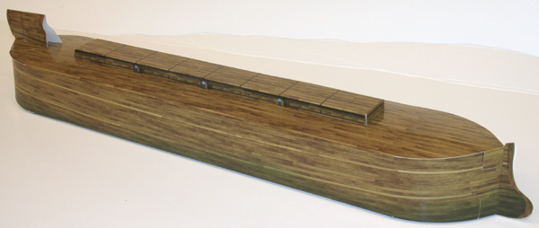
1. Separate the parts. Take care not to damage the tabs.
2. Pre-fold the skylight. Fold each edge completely in on itself so that it springs back to form a box shape.
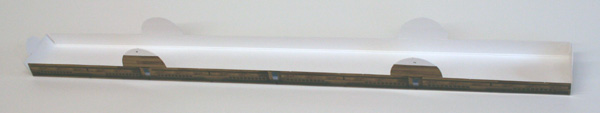
3. Insert the tabs, beginning from tab 6, then work along the length. (Order: Tab 6 then (1&4) then (2&3) then 5)
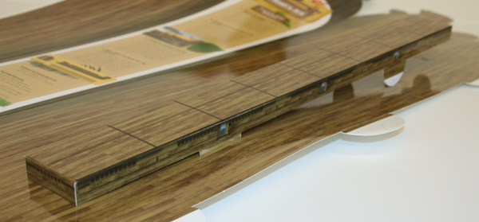
Insert all six tabs vertically into the roof, ending with tab 5.
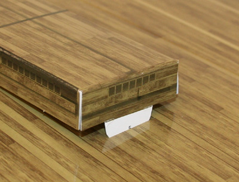
4. (Optional) Lock the tabs. Creasing the edge of the tabs will help to lock them into the slot.
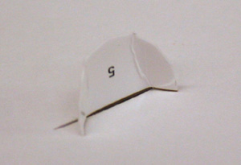
5. Prefold the fin and insert tab 12...
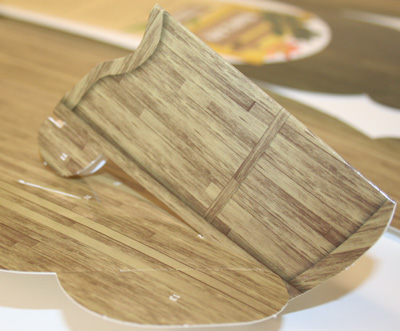
...then insert tabs 10 and 11.
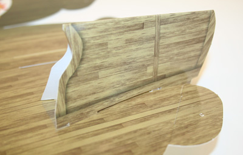
Complete the sail-fin by sliding it back towards the skylight. The hull will lock the sail-fin in place.
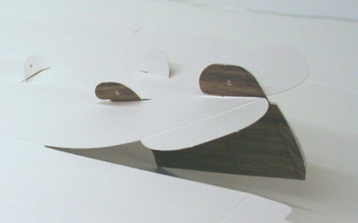
That's it for the roof!
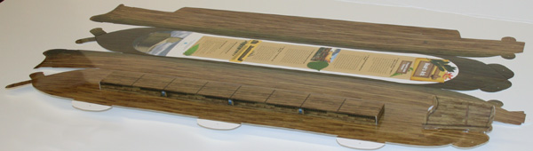
The roof of a ship is called the weatherdeck. It does not need to look like a house roof but can be almost flat since the Ark will rock anyway. The best way to keep water from entering the skylight hatch windows (Hebrew "tsohar") is to keep them up away from the roof with a short wall - called "combing". Perhaps this is the meaning of Genesis 6:16 A window shalt though make to the ark, and in a cubit shalt though finish it above; (KJV). A cubit would be an appropriate height for hatch combing!
6. Pre-fold the hull. Do not fold the stern tab much - only very lightly.
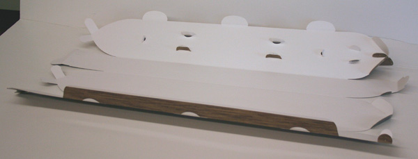
7. The bow: Fit tabs 7, 8 and 9 together. It is a good idea to lock tab 7. (as shown in step 5).
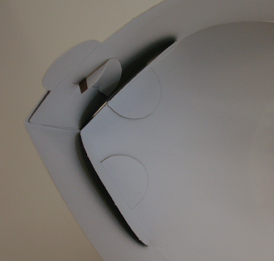
(Optional: You can use adhesive tape on the inside to lock tabs 8 and 9 in place)
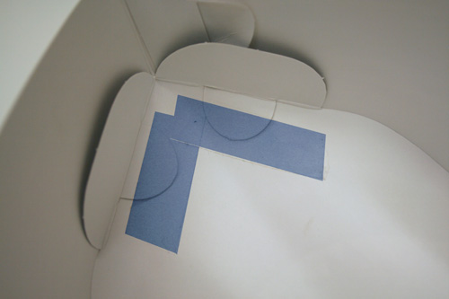
Why is the bottom of the bow curved upward? Well, this cardboard model is an approximation, but represents a bow designed to steer easily in the wind. Lack of depth in the water allows it to be pushed sideways, away from a cross-wind. (This seen in many ancient ships, such as this rising keel and upswept stem (right side) of an ancient boat from Santorini near Crete. Thera fresco - 13 century BC)
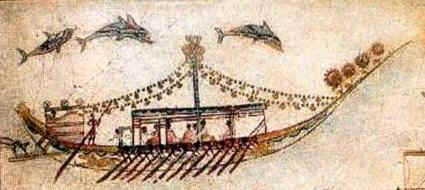
8. The stern: (Note: The stern tabs should only be folded very lightly.)
With tab 10, make sure the ledge gets into the slot first...
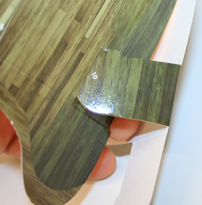
Once the ledge fits in, the tab can pivot.
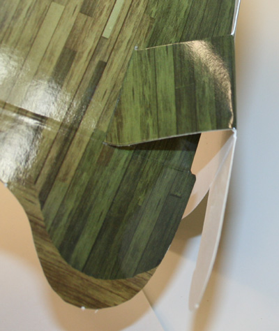
If you do it right, the tab should fit snuggly into the slot in the side wall.
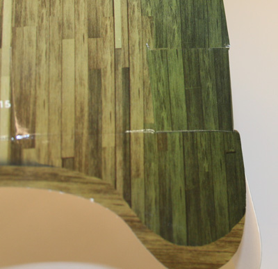
9. Repeat for tab 11.
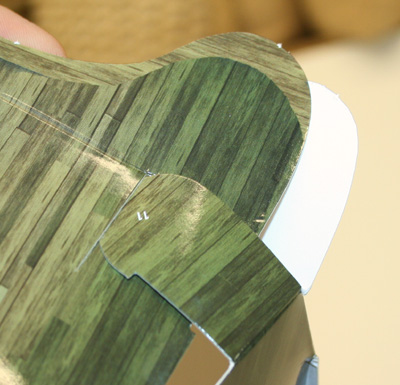
Make sure the tab fits into the slot in the hull wall.
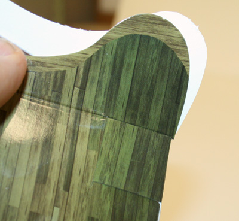
10. (Optional: You can use tape to secure tabs 10 and 11 if you like)
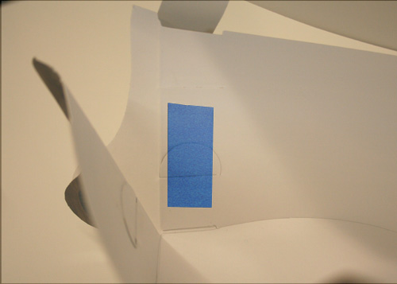
You are now ready to close the lid.
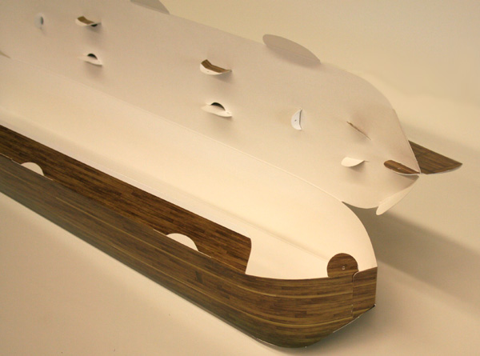
11. At the stern, insert tab 14 first...
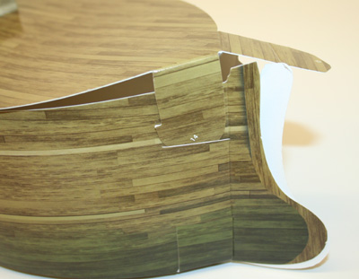
Ensure the ledge is through before aligning the tab straight.
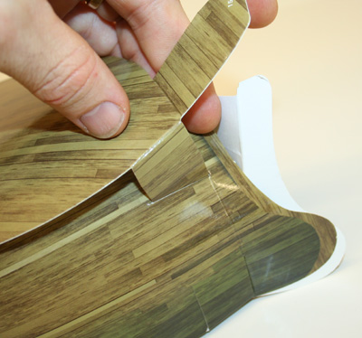
Tab 15 can wait (come back to this LAST!)
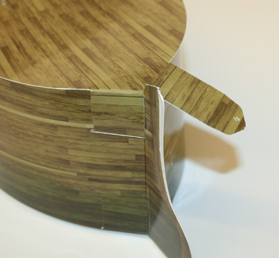
12. Now back to the bow. Tab 13 does not have an opposing tab (for simplicity), but the receiving tab is still there to reinforce the edge.
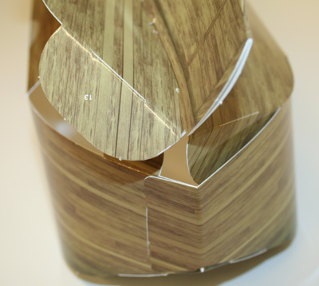
While inserting tab 13, keep a little tension on the hull wall to pull the tab into alignment with the slot.
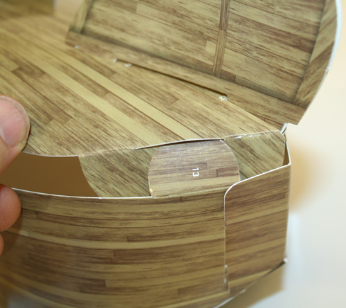
13. Now fit the three large roof tabs, starting with tab 16, then 17 then 18.
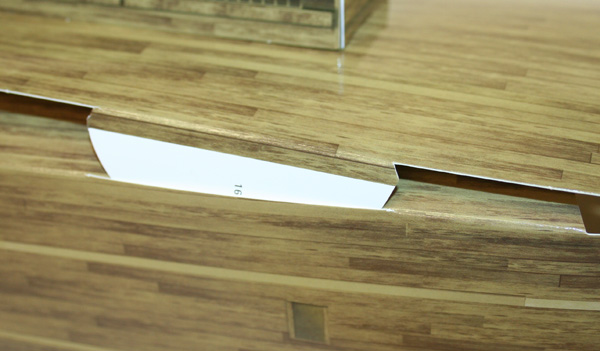
Make sure these tabs are down on the right side first, then press the tab home in a pivot motion.
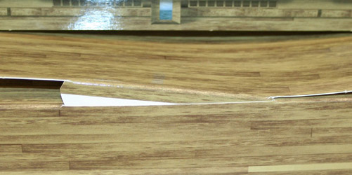
(Leave tab 18 undone until the last tab 15 is done - in case you want to open it a little)
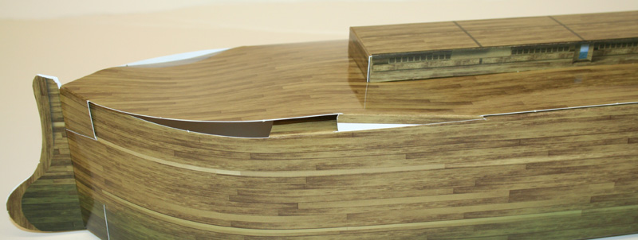
14. Tab 15: Bend it...
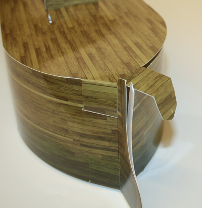
...insert it...
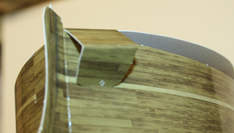
...and press tab 15 home.
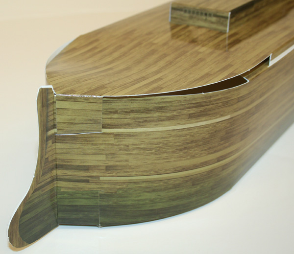
Press tab 18 home and you are almost finished!
What is that "rudder" for anyway? It is not a rudder - it is a rigid extension of the hull (again, the cardboard model is only an approximation). This appendage helps to lock the hull in the water at the stern, so when wind comes from the side, only the bow moves around. The Ark should travel with the stern facing the wind, rather than being side-on to the wind and waves.15. Correct the overlaps...
For the best appearance, the roof should overlap the sides...
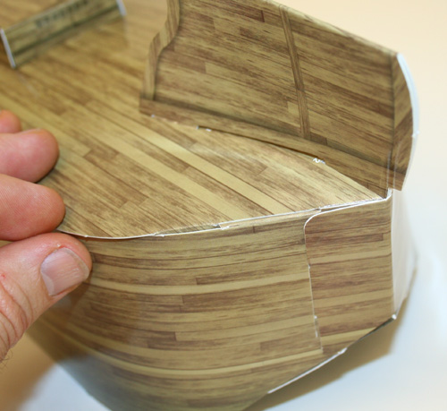
...and the sides should overlap the bottom.
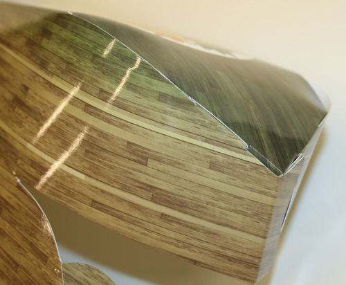
FINISHED!
Oh, and by the way, unlike the real Noah's Ark, this one is not waterproof.
1. What scale is the model?
It depends which cubit you want to use. Tim Lovett suggests that very ancient
building cubits should be closely linked to the Tower of Babel, and hence Noah's
Ark. A good example would be the
Scales:
| Long Cubit (Nippur) 20.4" (518.5mm) Recommended | Short Cubit (Graeco-Roman) 18" (457mm) Traditional | |
| Small Model (18.5 inches) | 1:325 | 1:290 |
| Large Model (32 inches) | 1:195 | 1:170 |
Tim Lovett Oct 10, 2007